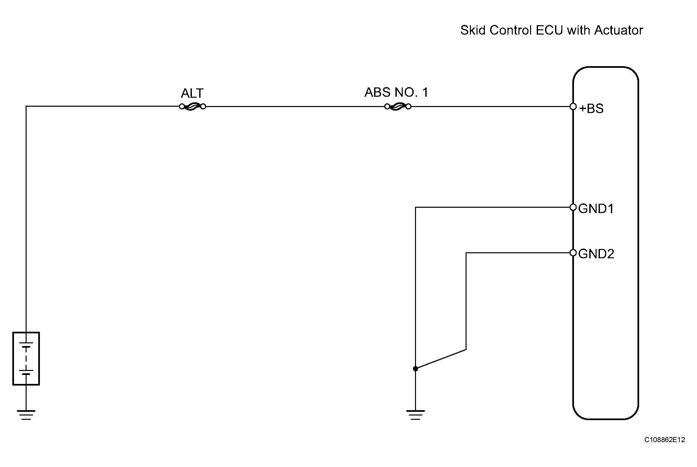

DTC C0278/11 Open in ABS Solenoid Relay Circuit; DTC C0279/12 Short to B+ in ABS Solenoid Relay Circuit: Wiring Diagram
Fig 1: Relay Circuit Wiring Diagram

Courtesy of © TOYOTA, LICENSE AGREEMENT TMS1002